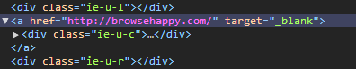

IE Alert! plugin v2.0
Table of Contents
- About the plugin
- What the plugin does
- Getting started
- Using the plugin
- Options
- Known issues
- Credits, Source and License
A) About the plugin - top
IE Alert is a handy jQuery plugin that shows a well designed modal box to the visitor who's trying to view your site with an older version of Internet Explorer browser, this modal box will convince your visitors to upgrade their browser to a newer version of Internet Explorer or to an another web browser.

This message will appear if your visitor is using an older version of Internet Explorer
B) What the plugin does - top
The IE Alert plugin will show a modal box to the visitor who is trying to view your website with Internet Explorer browser. This modal box tries to convince them to upgrade to a newer version of Internet Explorer or to an another modern web browser. By clicking the Upgrade button a new window/tab will be opened where your visitor can download the new browser. The modal box contains a title text (can be modified, see options) a basic text (can be modified, see options) a close button and a Upgrade button (the upgrade text and the URL can be modified, see options).
C) Getting started - top
Folder StructureWhen you unzip the downloaded file the folder structure looks the following:
- Documentation
- ThePlugin
- iealert
- iealert.js
- iealert.min.js
The first step is to include some required files into your HTML document.
1.Include the latest jQuery library right after the closing </head> tag in your html document.
Download jQuery from jquery.comHow jQuery works
2.Include the minified IE Alert plugin (iealert.min.js) right after the already included jQuery Library.
3.Include the style.css CSS file (which is in the iealert folder) right after the already included IE Alert plugin. Please note, that the style.css file must be in the same folder where the images are.
A simple example how your HTML markup will look like if you include the required files:
<!DOCTYPE html> <html> <head> <meta charset="UTF-8"> <title>TITLE</title> <script src="http://code.jquery.com/jquery-1.7.2.js" type="text/javascript"></script> <script src="iealert.min.js" type="text/javascript"></script> <link rel="stylesheet" type="text/css" href="iealert/style.css" /> </head> <body> </body> </html>
D) Using the plugin - top
If you included all the required files (see Getting started > First step) you only need to "call" the plugin. We "call" the plugin with this line:
$("body").iealert();
Just copy this code and paste it into a jQuery $(document).ready() function. (more about the jQuery $(document).ready() function)
Example:
$(document).ready(function() {
$("body").iealert();
});
If you done everything exactly as it was written you can test your website with Internet Explorer 8,7,6 and you will see the modal box appear.
E) Options - top
The IE Alert plugin accepts 6 options: support, title, text, upgradeTitle, upgradeLink, overlayClose
− The support option
The support option defines on which version of Internet Explorer will the modal box appear.
The support option accepts 4 parameters:
ie9 - The modal box will appear on Internet Explorer 9,8,7,6.
ie8 - The modal box will appear on Internet Explorer 8,7,6.
ie7 - The modal box will appear on Internet Explorer 7,6.
ie6 - The modal box will appear on Internet Explorer 6.
By default it's set to ie8.
Example codes:
$("body").iealert({ support: "ie9" });
The modal box will appear on Internet Explorer 9,8,7,6
$("body").iealert({ support: "ie8" });
The modal box will appear on Internet Explorer 8,7,6
$("body").iealert({ support: "ie7" });
The modal box will appear on Internet Explorer 7,6
$("body").iealert({ support: "ie6" });
The modal box will appear only on Internet Explorer 6
− The title option
The title option specifies the title text, by default its: "Did you know that your Internet Explorer is out of date ?" . You can modify this text to whatever you want.

The title
example code:
$("body").iealert({ title: "your browser is old!" });

The title text after the change.
− The text option
The text option specifies the text what is under the title text, by default its: "To get the best possible experience using our site we recommend that you upgrade ...". You can modify this text to whatever you want.

The text
example code:
$("body").iealert({ text: "Please, update your browser." });

The text after the change.
Note, the text parameter accepts HTML tags like the HTML font tag . So you can style the text like this:
$("body").iealert({ text: "Please, <font color="red">update</font> your browser" });
The output will be:

− upgradeTitle
The upgradeTitle option specifies the title text inside the upgrade button, by default its: "Upgrade" . You can modify this text to whatever you want.

The title
example code:
$("body").iealert({ upgradeTitle: "Download" });

The upgrade text after the change.
− upgradeLink
The upgradeLink option specifies the URL where the user will be sent when he clicks the Upgrade button, by default its pointing to: "http://www.google.com/chrome/". You can modify this URL to whatever you want.
The URL
example code:
$("body").iealert({ upgradeLink: "http://www.mozilla.org/en-US/firefox/new/" });

The upgrade URL after the change.
− overlayClose
Optionally you can close the modal box by clicking the overlay, the overlayClose option specifies this option. By default its turned off (false) but if you want you can turn in on with the true parameter.
example code:
$("body").iealert({ overlayClose: true });

The red background shows what is considered overlay.
− closeBtn
The closeBtn option whether or not to display a close button for the modal box. By default, the plugin shows the close button allowing the user to continue on with using the site after being shown the modal box.
Example code:
$("body").iealert({ closeBtn: false });

F) Known issues - top
IE Alert has some known issues, but these are not major issues and they are IE6 related:
1. Different overlay for IE6Sadly Internet Explorer 6 doesn't support the PNG file format thats why I had to make different overlay for IE6 browsers. The overlay looks the following on IE6 browsers:

2. Hover effect doesn't work on IE6
Sadly Internet Explorer 6 doesn't support :hover state on divs. What this means is when somebody wants to close the modal box he will not see the hover statement for the close button, but the close function will work.
If you found a good solution for these issues please contact me.
G) Credits, Source and License - top
The modal box design was inspired by a PSD freebie made by design deck. Check out their site on www.designdeck.co.uk for free PSD files.
The IE Alert plugin was made by David Nemes.
License: You can use it on any project without any restriction.